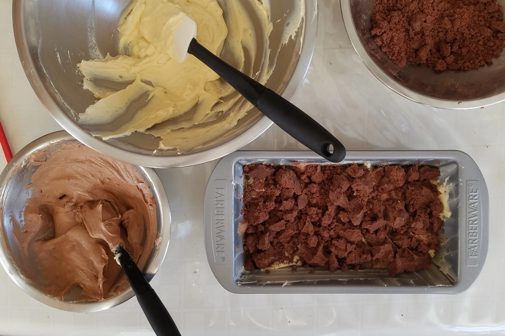
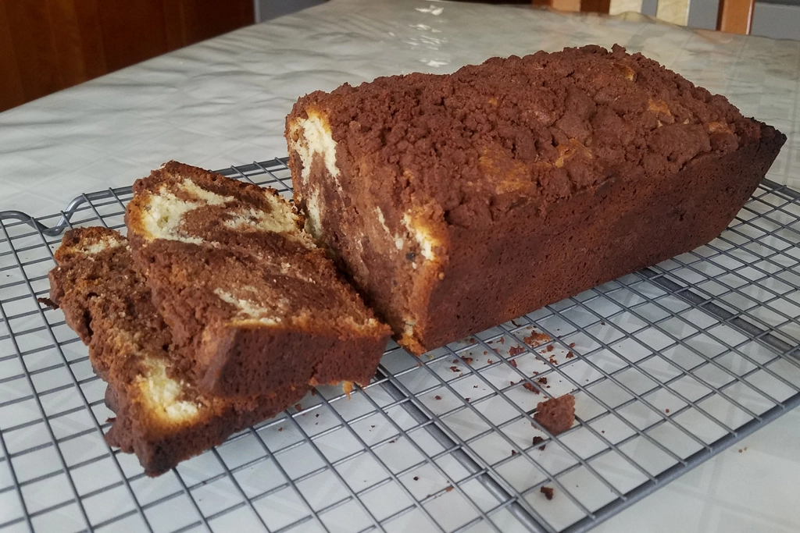
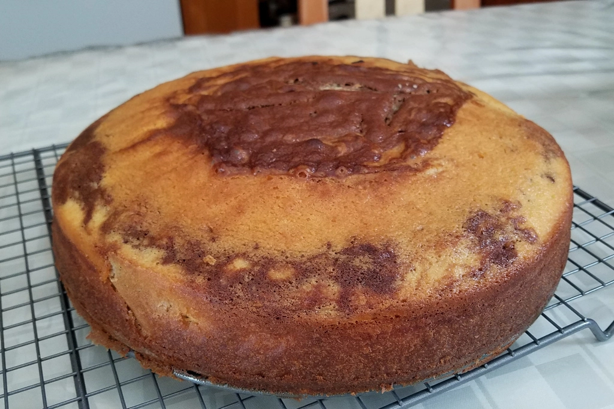
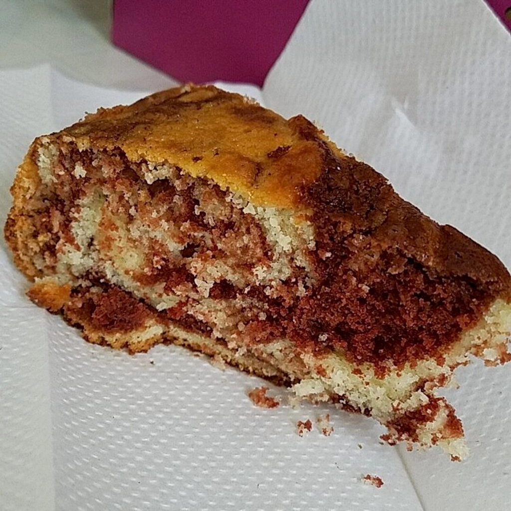

Trying Out Different Marble Cake Recipes
Mar 21 - Written by Emily
Have you ever thought about the difference between a loaf cake and a pound cake?
Though they may seem like the same kind of cake, they aren’t. Pound cakes are much denser than loaf cakes and though I prefer loaf cakes, I’ve never successfully made one. Pound cakes on the other hand, I’ve attempted twice and had some success with.
So over the course of a couple of weeks, I attempted to make various marble cakes, two of which were in the form of a pound cake and one was a standard marble cake. Why did I suddenly have the urge to make so many marble cakes? Well, after watching Sohla El-Waylly make pound cakes on Food52’s Youtube channel, I was inspired to attempt it myself.
After gathering all of my ingredients and watching the video many times to ensure I was doing everything right, I got to work. Since I wanted to make a marble version of the pound cake, I followed exactly what the recipe said to do, including the streusel topping that would go in the middle of the cake and on top. After making Claire Saffitz’s coffee cakes a few months ago and learning that I am not the biggest fan of streusel (unless it is made properly), I was hesitant to make it for this recipe. A few minutes of contemplating it later, I decided to move forward with the streusel in hopes that it’d be better this time.
Once I completed the streusel, I moved on with the batter which involved a long process of mixing and scraping down the paddle and bowl before each ingredient was added. Now, unlike Sohla, I was using a hand mixer so mixing for long periods of time and scraping everything down between each step felt long and tedious but since it was crucial to a fluffy pound cake, I trudged on. I never thought making a cake batter would take so long but now it came to the fun part, dividing the batter to create a chocolate batter and a vanilla one to create the ultimate marbling effect within this loaf. Several dollops of batter and layers of streusel later, my pound cake was ready for the oven!
Once the cake was done baking and cooled off, I sliced it open to reveal the ever so desired marbling effect on the inside! Though I made a little too much chocolate batter, I was still able to get some okay marbling effect on the inside. The combination of the chocolate batter and chocolate streusel made it a little too chocolatey but it was still tasty. My take on streusel was a slight improvement from the coffee cake; however, it still wasn’t my ideal streusel and if I were to make this exact recipe again, I’d opt for no streusel. Another thing I’d change is to add that tablespoon of water to the chocolate batter that was recommended so that the end result wouldn’t be so dense. Now, pound cakes are fluffy and denser than other cakes, but mine felt a little too dense and the flavors could have been stronger. Overall, it was a solid attempt at this recipe and if you want to make a pound cake, I’d recommend you try this one out because there are so many different variations you can do once you have the basic pound cake recipe down!
Speaking of variations, I attempted this recipe again but instead of making a chocolate swirl pound cake, I made a matcha swirl pound cake. Now this one was a bit simpler as there was no need for the streusel topping, but Sohla never mentions the quantity of matcha to add, so I guessed and followed what was done with the chocolate version since that felt like a good approximation. This attempt went a bit smoother than the first time as I knew what needed to be done and was able to learn from my mistakes. However, pound cakes and oven temperatures can be a bit finicky at times, so this one ended up being slightly underbaked in some areas but regardless, it was still good. This attempt was less dense than the first time, but it still could’ve used more flavor. Since I was low on matcha powder, I didn’t add as much as I would have liked resulting in a lighter matcha flavor. The vanilla base also could have used some more vanilla flavoring but overall, this pound cake had just the right amount of sweetness and went well paired with a nice cup of tea!

This last marble cake recipe wasn’t a thought I had until I saw it on an Instagram story and knew I needed to try it out! This buttermilk marble cake recipe is by the New York Times and with little luck in making a fluffy pound cake, I decided to try out a regular cake recipe. This cake was really easy to put together and unfortunately, I wasn’t able to find my bundt pan, so I made it in a normal 9 inch cake pan and it turned out quite nicely. Though the marbling effect that I made on the cake prior to baking looked much nicer than the end result since the way the cake rose in the oven shifted the marbling effect to being more central.
Regardless of what the cake looked like, the inside of the cake revealed a much lovelier marbling effect than the previous two cakes and this cake was also very soft and fluffy. It was exactly what I was hoping for. Like the previous two cakes, I would have liked a stronger chocolate flavor but nonetheless, it was delicious! I also opted to not make the frosting that went along with this recipe as I am not big on frosting but if you have a sweet tooth and are looking for something chocolatier, then I’d consider making it.
After making 3 different marble cakes, I can’t say which one is the best as they are different types of cakes and different flavors, but I will say that if you need a recipe for a marble cake or a pound cake, then you’ve come to the right place.